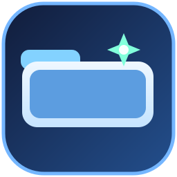

01 · Espaço
Tamanho das pastas
Descubra quais pastas ocupam mais espaço sem abrir Propriedades.

Northstar FilesNavegue, encontre duplicados, compare pastas e veja o que ocupa espaço — em uma interface desktop rápida, escrita em Rust.
Descubra quais pastas ocupam mais espaço sem abrir Propriedades.
Compare o conteúdo dos arquivos e veja diferenças entre duas pastas.
Filtre por extensão, tamanho e data; salve pesquisas para reutilizar.
Use dois painéis, terminais e scripts de ação com permissões restritas.
Abra o desinstalador que cada programa registrou no sistema.
As análises são feitas no computador; nada é enviado para a nuvem.
Baixe o instalador, execute-o e escolha se deseja um atalho na área de trabalho. O Northstar Files é um projeto da comunidade, gratuito e de código aberto.